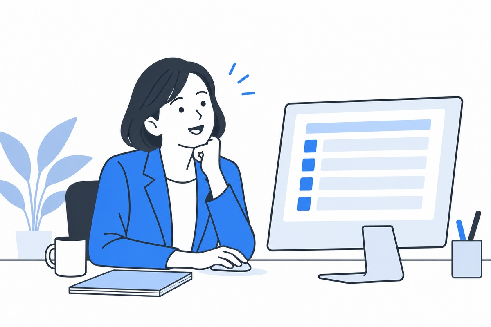

01
AI社員・AI部署長構築
反復業務と、確認・管理の仕事を、AIに任せる。
反復・定型の業務はAI社員が、報告・確認・進捗管理はAI部署長が担当します。「あの人しか分からない」をなくし、管理者への確認集中をほどく。人にしかできない仕事に、社員が集中できる体制をつくります。
詳しく見る
業務も管理も、AIに“社員・部署長のように”任せる
反復業務はAI社員が、確認・管理業務はAI部署長が担当。担当者依存と管理者への確認集中を解消し、人にしかできない仕事に集中できる体制をつくります。
AI社員構築
反復・定型業務をAIが担い、担当者依存を解消。「あの人しか分からない」をなくし、業務を仕組みに落とし込みます。
AI部署長構築
報告・確認・進捗管理などをAIが整理。管理者への確認集中をほどき、判断の詰まりを解消します。
進め方
現場の話をお聞きし、効果の高い業務から段階的に。無理のない範囲で、定着まで伴走します。
料金はご相談ください（要見積り）